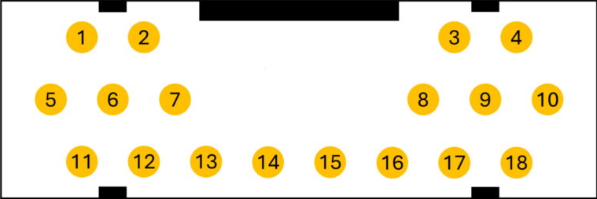

Programmierkabel für MTP3000-, MTP6000-, MTP8500- und MXP600-Serie herstellen
Die Motorola MTP3000-, MTP6000-, MTP8500- und MXP600-Serien werden über den Bottom Connector am Fuß des Geräts programmiert. Mit einem USB-Seriell-Adapter und etwas Lötarbeit lässt sich ein Programmierkabel einfach selbst bauen.
Pinbelegung
| Pin | Signal | BTB-Stecker (J1200) |
|---|---|---|
| 1 | USB_DP_TXD | 11 |
| 2 | USB_5V | 14 |
| 3 | OPT2 | 22 |
| 4 | OPT1 | 24 |
| 5, 9, 14 | GND | 1, 3, 5, 7, 9, 15, 17, 19, 20, 21, 23, 25, 27, 29, 30 |
| 6 | USB_DM_RXD | 13 |
| 7 | SWB+_SUPPLY | 26, 28 |
| 12 | EXTB+ | 2, 4, 6, 8, 10 |
Ansteuerung der Pins am Bottom Connector
Über die beiden OPT-Pins wird dem Funkgerät mitgeteilt, welches Zubehör angeschlossen ist. Als Bastler legst du die Pegel einfach über Brücken auf GND fest:
| Verwendungszweck | Modus | USB | OPT1 (Pin 4) | OPT2 (Pin 3) |
|---|---|---|---|---|
| Kein Zubehör | – | – | 1 (offen) | 1 (offen) |
| Boot (Factory) | UART | – | egal | egal |
| AIE Keyload | UART | – | 0 (GND) | 0 (GND) |
| IMT (Integrierter Messtest) | UART | – | 0 (GND) | 0 (GND) |
| ITM | USB | Device | 1 (offen) | 0 (GND) |
| USB-Ladegerät (Travel Charge) | USB | Device | 1 (offen) | 0 (GND) |
| Programmierbetrieb | USB | Host | 1 (offen) | 0 (GND) |
| Ein weiteres MTP-Gerät | USB | Host/Device | 1 (offen) | 0 (GND) |
| Spannungsversorgung (fest) | PS charger-USB | Device | 0 (GND) | 1 (offen) |
| TC/VPA (Ladegerät) | PS charger-USB | Device | 0 (GND) | 1 (offen) |
| DUC (Dual-Unit Charger) | PS charger-USB | Device | 0 (GND) | 1 (offen) |
| MUC (Multi-Unit Charger) | PS charger-USB | Device | 0 (GND) | 1 (offen) |
| Car Kit (Fahrzeughalterung) | PS charger-USB | Device | 0 (GND) | 1 (offen) |
Benötigte Materialien
- USB-A-auf-B-Kabel (gängiges Drucker-/Scannerkabel)
- Passender Stecker für den Bottom Connector oder Female-Jumper-Wires
- Lötkolben, Lötzinn, Schrumpfschlauch

Bauanleitung
- USB-Stecker abtrennen – Den USB-B-Stecker des Kabels abkneifen, sodass die Adern frei liegen.
-
Kabel vorbereiten – Isoliere die vier Adern des USB-Kabels
ab (VCC, GND, D+, D-). Die USB-Belegung ist:
Farbe (typ.) Signal Rot VCC (5V) Weiß D- Grün D+ Schwarz GND - Programmierbetrieb – Brücken setzen – Damit das Funkgerät in den Programmiermodus wechselt, muss OPT2 (Pin 3) auf Low (GND) gelegt werden. Lege dazu eine Brücke zwischen Pin 3 und Pin 9 (GND) an und halte danach die Tasten "1", "9" und "Power" gedrückt, bis du den Programmiermodus siehst.
-
Verbinden – Löte die USB-Adern an die
entsprechenden Pins des Bottom Connectors:
USB-Ader Bottom Connector Pin Signal GND (Schwarz) 5, 9, 14 GND D+ (Grün) 1 USB_DP / TXD D- (Weiß) 6 USB_DM / RXD Hinweis: VCC (Rot) wird im Programmierbetrieb nicht benötigt. Isoliere diese Ader und lege sie zur Seite.
- Kabel testen – Mit einem Multimeter die Durchgängigkeit aller Verbindungen prüfen.
- Schrumpfschlauch anbringen – Alle Lötstellen mit Schrumpfschlauch isolieren.
Laden des Gerätes
Zum Laden des Geräts über das Kabel wird eine andere Beschaltung benötigt:
- Brücke zwischen Pin 4 (OPT1) und Pin 9 (GND)
- 5V Gleichspannung (max. 1A) an Pin 12 (EXTB+) anlegen
- GND an Pin 5 oder 14 anschließen
Hinweis: Anleitung & Pinout basieren auf dem Originalartikel von HamTetra Network und dem MTM-Programmierkabel-Guide.
Wichtiger Hinweis: Ich übernehme keine Haftung für eventuelle Schäden an deinem Funkgerät oder Programmierkabel. Alle Angaben ohne Gewähr. Bau und Nutzung erfolgen auf eigene Gefahr.